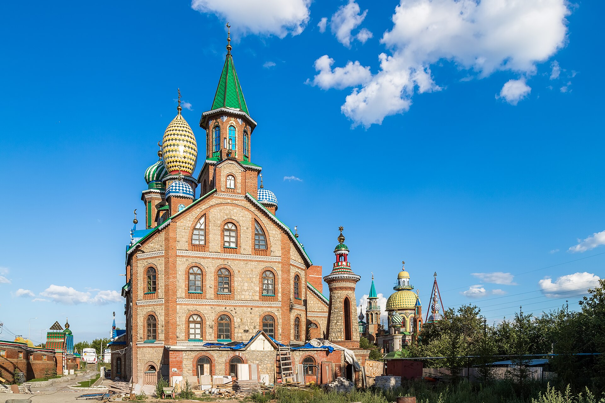
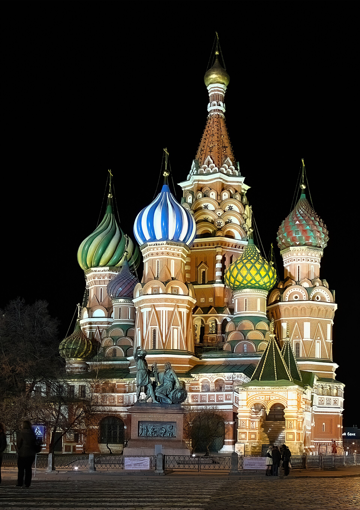
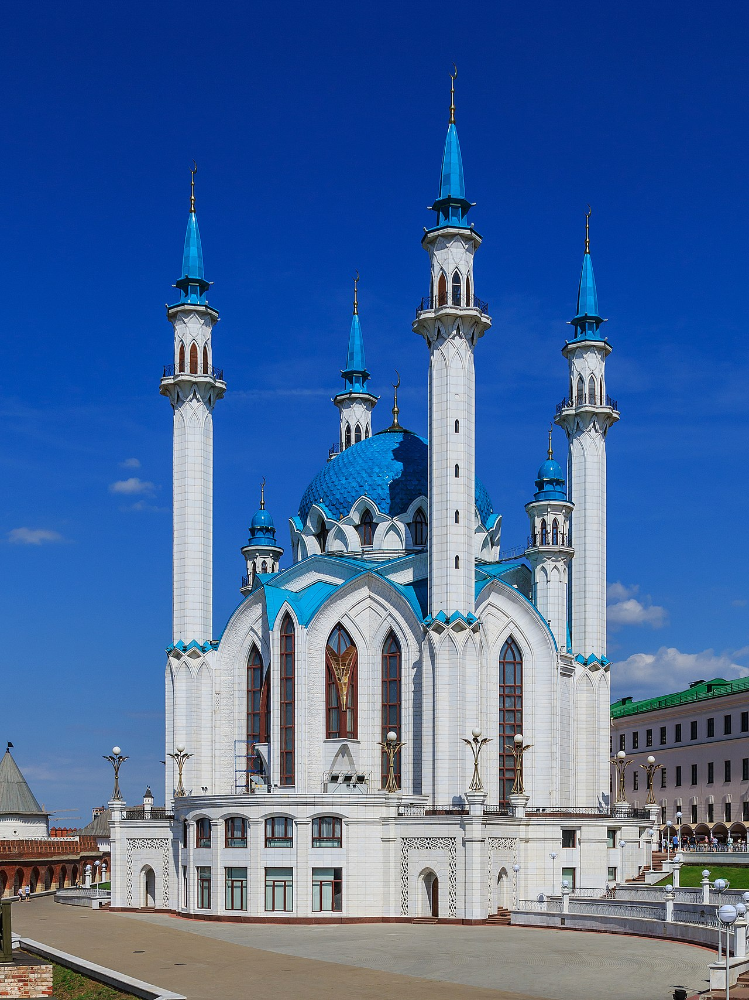
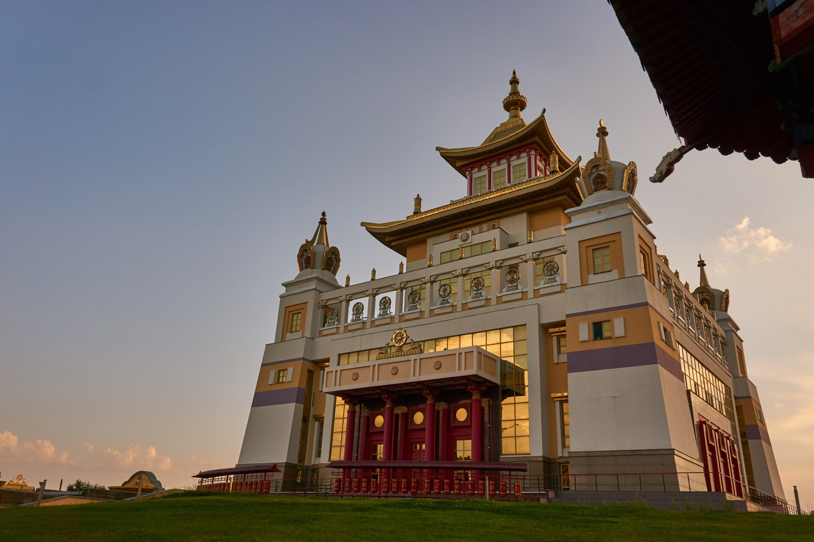
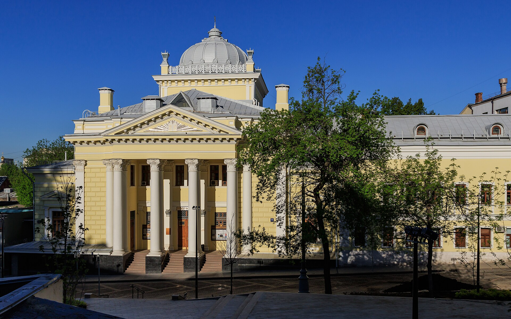
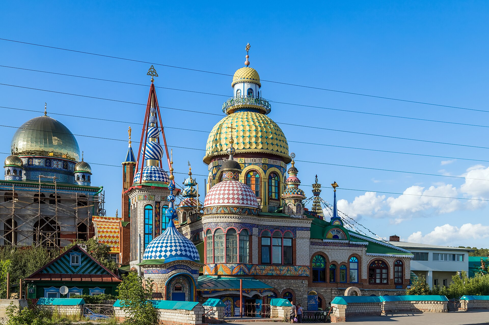

Татарские сёла
Православные и мусульмане поздравляют друг друга с праздниками, делятся угощениями и помогают по хозяйству.

Православие · Ислам · Буддизм · Иудаизм
Россия никогда не была страной одной веры. Веками здесь сталкивались, переплетались и мирно уживались разные религиозные традиции — и в этом разнообразии скрыта особая ценность.
Храм всех религий, Старое Аракчино
Введение
Россия — это не просто православная цивилизация. Это культура храмов, где на расстоянии нескольких зданий могут соседствовать купола, минареты, пагоды (дацаны) и синагоги.
Конституция Российской Федерации определяет страну как светское государство, но исторический путь доказал обратное: религия была главным инструментом объединения, освоения и даже разделения земель.
Как это начиналось
Ни одна из крупнейших религий не была принесена на штыках завоевателей. Они приходили через торговые пути, личный выбор правителей, династические браки и постепенное освоение новых земель.

Отсчёт ведут с 988 года, когда князь Владимир Святославич принял крещение по византийскому обряду. Крещение Руси стало не кровавой реформой, а постепенным процессом: языческие капища соседствовали с первыми церквями, а новые христианские смыслы накладывались на местные обычаи.

Уже в VII–VIII веках арабские купцы достигали Волги и Каспия, а в 922 году волжские булгары приняли ислам как государственную религию. В историю Российского государства ислам вошёл в 1552 году, когда Иван Грозный взял Казань — и мусульманские народы навсегда вошли в состав страны.

Буддизм пришёл через кочевые народы — калмыков, бурят, тувинцев — из Тибета и Монголии как естественная часть их культуры. В 1741 году императрица Елизавета Петровна официально признала буддизм в Российской империи: редкий для Европы XVIII века пример веротерпимости.

Массовое появление иудейских общин связано с разделами Речи Посполитой. Внутри «черты оседлости» евреям официально разрешалось исповедовать иудаизм, строить синагоги и соблюдать субботу. Позже многие иудеи внесли огромный вклад в науку, культуру и экономику России.
Уклад жизни
Религии веками формировали уклад народов России. Даже далёкий от веры человек невольно следует привычкам, которые оттачивались под её влиянием.
Рядом, а не против

В посёлке Старое Аракчино под Казанью художник Ильдар Ханов построил удивительное здание. Здесь нет богослужений — это архитектурная фантазия, где на одной территории соседствуют православный купол, мусульманский минарет, иудейская арка и буддийская пагода.
Ханов не пытался смешать религии в одну. Он показал, что их архитектура может не враждовать, а дополнять друг друга, стоять рядом и радовать глаз.
Православные и мусульмане поздравляют друг друга с праздниками, делятся угощениями и помогают по хозяйству.
Буддисты и православные вместе освящают воду на Крещение.
На Ураза-байрам мусульмане поздравляют соседей-христиан, а на Пасху христиане приходят к мусульманам.
Лидеры четырёх религий собираются несколько раз в год, выпускают совместные заявления и проводят акции милосердия.
Переплетение, а не границы
Границы между верами здесь не жёсткие: даже там, где преобладает одна религия, встречаются храмы, мечети и дацаны других. Карта показывает не изоляцию, а результат многовекового соседства.
Главенствует православие — повсюду видны золотые купола.
Соседствуют на равных: в одном горизонте — и минареты, и купола.
Чечня, Дагестан, Ингушетия — минареты, а в горах сохранились древние христианские храмы.
Родина российского буддизма — дацаны с пагодами и молитвенными барабанами.
В крупных городах есть и мечети, и синагоги, и католические костёлы.
Сохранились священные рощи и культовые места — наследие язычества.
Чтобы было понятно
Краткие пояснения к словам, которые встречаются в рассказе о праздниках, обрядах и повседневном укладе разных религий России.
Итог
Россия — страна, где разные веры не просто уживаются, а создают общую культуру, не теряя своей идентичности. Если присмотреться, у них много общего: все религии учат добру, милосердию, честности и заботе о ближнем.
Именно в умении сохранять своё и при этом слышать другого проявляется настоящая сила и зрелость общества.